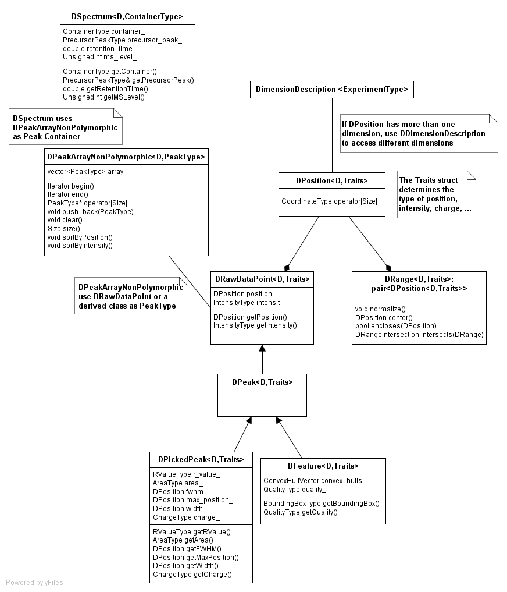
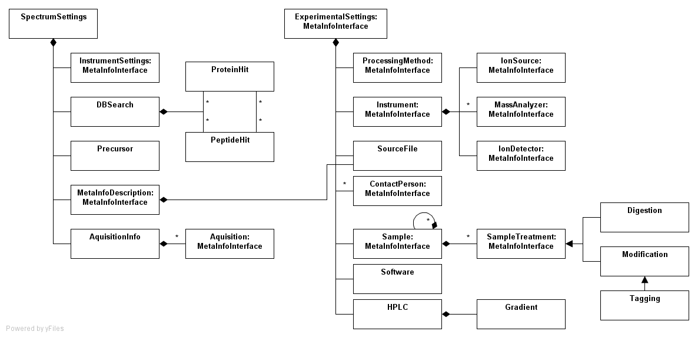
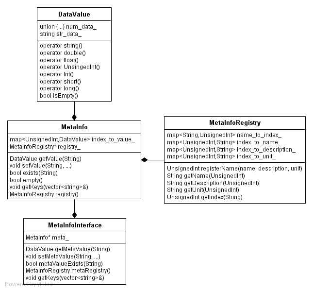
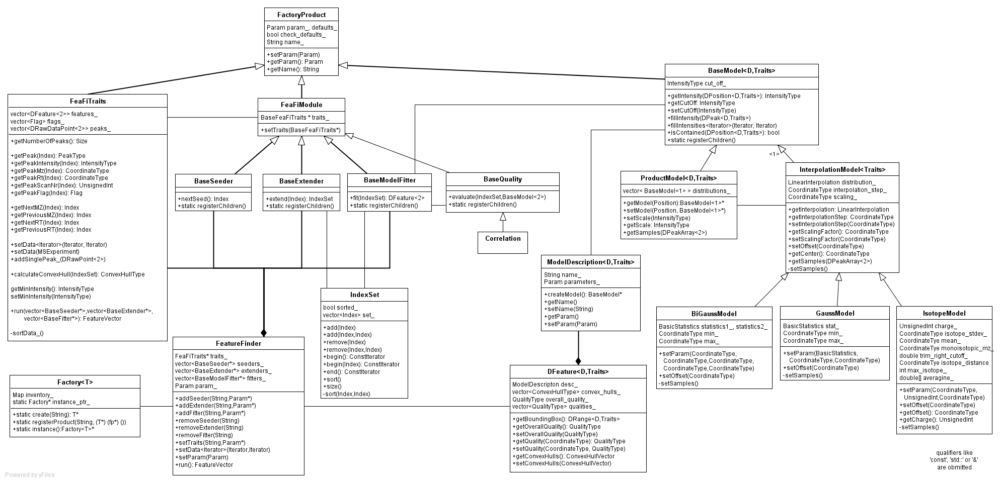

Tutorial
Subsections of this tutorial are:
Kernel |
Datastructures |
Format |
Metadata |
Transformations |
Filtering |
Visual |
Analysis
Kernel
The KERNEL folder contains classes that represent the
actual MS data: Peaks, Spectra, Features, Maps, ...
Main datastructures
MSSpectrum is a 1-dimensional spectrum of an
arbitrary peak type that holds meta information as well
(SpectrumSettings).
MSExperiment is a two dimensional MS
experiment. It is implemented as a vector of MSSpectrum and is
derived from ExperimentalSettings for meta information.
Those two main classes consist of several other classes that are explained now.
|

|
Traits
The traits class used as template argument of many Kernel classes
determines the type that e.g. position, intensity and charge
have. By default most of these types are doubles.
If you do not need double precicion, you can use float traits
instead.
D-dimensional coordinates
DPosition represents a coordinate in D-dimensional space.
Dimensions are accessed by operator[].
DimenstionDescription is used in order to have a defined
order of dimensions, if there is more than one dimension. The
following example demonstrates its use for a LC-MS experiment:
// typedef to avoid too long name
typedef DimensionDescription < DimensionDescriptionTagLCMS > DimDesc;
// create coordiante
DPosition<2> coordiante;
// sets RT and MZ dimentsion
coordiante[DimDesc::MZ] = 500.0;
coordiante[DimDesc::RT] = 0.1;
DRange is a pair of DPositions that spans a
D-dimensions hypercube and offers some convenient methods e.g. for
intersection and center.

Raw data, peaks and features
DRawDataPoint is rawdata point with a D-dimensional
position and an intensity. Raw data means that no 'peak picking'
or other pre-processing methods were performed on this data.
DPeak and its derived classes are used for data that on
which some kind of 'peak picking' was applied (It also adds a
interface for persistent storage e.g. in a DB). Although
DPeak is a 'picked' peak, it does not contain any
information about the 'peak picking'.
DPickedPeak is used if more information from any
pre-processing steps e.g. width or full width at half max, is
available.
DFeature is also derived from DPeak but
represents a collection of peaks. In general, it summarizes all
peaks related to a specific peptide or some other chemical
entity.
DSpectrum and peak container
DSpectrum represents a D-dimensional spectrum i.e. a
container of D-dimensional data points (any class derived from
DRawDataPoint).
One of the template arguments of DSpectrum is the
Container the data is stored in. As container
DPeakArrayNonPolymorphic, DPeakArray or
DPeakList are used.
DPeakArrayNonPolymorphic is vector of data points with a
more convenient interface for sorting of the data.
DPeakArrayNonPolymorphic is the recommended container, if you
do not need polymorphism!
DPeakArray behaves like DPeakArrayNonPolymorphic
but is polymorphic, i.e. it can hold peaks of PeakType
and of classes derived from PeakType at a time.
DPeakList behaves like std::list<PeakType>
but is polymorphic.
The following example demonstrates the use of a 2-dimensional
spectrum of raw data with DPeakArrayNonPolymorphic as
container:
// typedef to avoid too long names
typedef DimensionDescription < DimensionDescriptionTagLCMS > DimDesc;
typedef DSpectrum<2, DPeakArrayNonPolymorphic<2, DRawDataPoint<2> > > Spectrum2D;
// create a spectrum
Spectrum2D spectrum;
// creata a data point
DRawDataPoint<2> data;
data.getPosition()[DimDesc::MZ] = 500.0;
data.getPosition()[DimDesc::RT] = 0.1;
data.getIntensity() = 47.11;
// insert the data point into the spectrum
spectrum.getContainer().push_back(data);
// iterate over the data points
for (Spectrum2D::Iterator it = spectrum.getContainer().begin(); it!=spectrum.getContainer().end(); ++it)
{
cout << *it << endl;
}
Datastructures
The DATASTRUCTURES folder contains shared datastructure
classes, e.g. a convenient string implementation.
Format
The FORMAT folder contains classes for both database and
file I/O.
File adapter
DTAFile is an adapter to read and write DTA files (*.dta).
DTA is a simple ASCII-based format for MS data. The first line
contains the singly protonated peptide mass (MH+) and the peptide
charge state. Subsequent lines contain the fragment ion m/z and
intensity values.
All of the following file adapters share a common interface and
can read and write (except for ANDIFile) to different
datastructures that implement at least the interface of
MSExperiment with peak type DRawDataPoint.
DTA2DFile is an adapter to read and write DTA2D files
(*.dta2d), an extension of DTA to hold LCMS data. Each line
contains the fragment ion retension time, m/z and intensity
values.
MzXMLFile is an adapter to read and write mzXML files
(*.mzXML). Based on XML the format contains MS metadata, e.g.
instrument settings and sample description, as well as LCMS and
MSMS spectra in base 64 format. For more information see Seattle
Proteome Center.
MzDataFile is an adapter to read and write mzData files
(*.mzData). Based on XML the format contains MS metadata (conform
with PSI-OM) as well as LCMS and MSMS spectra in base 64 format.
For more information see HUPO PSI-MS.
MzDataFile is able to read and write the additional information
of picked peaks (DPickedPeak) as well.
ANDIFile is an adapter to read ANDI/MS files (*.cdf). The
binary ANDI/MS format is an analytical data
interchange standard for mass spectrometry
based on netCDF.
The following example demonstrates the use of MzDataFile
and ANDIFile to convert one format into another using
MsExperiment to hold the data temporarily. The code can
be used interchangeable with any other file adapter:
// create the file adapters
ANDIFile andi;
MzDataFile mzdata;
// temporary data storage
MSExperiment< DRawDataPoint<1> > map;
// convert ANDI/MS to MzData
andi.load(map,"dummy.cdf");
mzdata.store(map,"dummy.mzData");
Metadata
The METADATA folder contains classes for storage of MS
metadata, e.g. instrument settings and sample description.
ExperimentalSettings holds metainformation about the
experiment the data was created with e.g. the MS instrument, the
HPLC settings and the operator.
SpectrumSettings contains metainformation about settings
specific to one spectrum, i.e. settings of the MS instrument,
precorsor information (if it is a MS spectrum) and results of ID
engines (Mascot, Sequest, ...). 
MetaInfo
 MetaInfo is used to easily store information
of any type you like, that does not fit into the the other
classes. It implements Name-Value-Type triplets.
DataValue is a data structure that can store any numerical
or string information. It also supports casting of the stored
value back to its original type.
MetaInfo is a associative container that stores
DataValues as values associated to string keys.
Internally a the string keys are converted to integer keys for
performance resaons i.e. a map<UnsignedInt,
DataValue> is used.
The MetaInfoRegistry associates the string keys used in
MetaValue with the integer values that are used for
internal storage. Each key used has to be registered at the
registry first. The MetaInfoRegistry is a singleton.
Classes that have one MetaInfo object, inherit from
MetaInfoInterface.
Transformations
The TRANSFORMATIONS folder contains classes for the
transformations of raw and peak data.
RAW2PEAK
This folder contains classes for the transformation from raw to peak data.
During this so called "peak picking" process we converte the raw ion count data, aquired by the machine, into peak lists
for the further processing.
PeakPickerCWT
This is the main class which you need for peak picking. It uses the multiscale nature of spectrometric data by first detecting the mass peaks in
the wavelet-transformed signal before a given asymmetric peak function is fitted to the raw data.
In an optional third stage, the resulting fit can be further improved using techniques from nonlinear optimization.
It offers you four different mehtods for peak picking. Two of them work on
a container of one-dimensional data points. The following code shows for example how to search for peaks in
a single MS spectrum:
// A container for the raw data
MSSpectrum <DRawDataPoint <1> > raw_spectrum;
// Instantiate a file reader for dta files.
DTAFile dta_file;
// Load the raw data stored in "MSSpectrum.dta" into the raw data container.
dta_file.load("MSSpectrum.dta", raw_spectrum);
// instantiate a peak picker object
PeakPickerCWT peak_picker;
// Set the threshold for a minimal peak intensity (height)
peak_picker.setPeakBound(200);
// Set the wavelet scale
peak_picker.setWaveletScale(0.2);
// Enable the optimization of the peak parameters
peak_picker.setOptimizationFlag(true);
// Container for the resulting peaks
MSSpectrum <DPickedPeak <1> > peak_spectrum;
// First possibility: pick the peaks on a well defined iterator range
peak_picker.pick(raw_spectrum.begin(), raw_spectrum.end(), peak_spectrum);
// Second possibility: pick the peaks on the whole raw data container
peak_picker.pick(raw_spectrum, peak_spectrum);
The other two methods work on containers of MSSpectra (e.g. vector > >).
The following code example should explain the usage:
// Instantiate a MSExperiment for the raw data
MSExperiment <DRawDataPoint <1> > raw_experiment;
// Instantiate a file reader for mzData files.
MzDataFile mzdata_file;
// Load the raw data stored in "MSExperiment.mzData" into the raw_experiment
mzdata_file.load("MSExperiment.mzData", raw_experiment);
// instantiate a peak picker object
PeakPickerCWT peak_picker;
// Set the threshold for a minimal peak intensity (height)
peak_picker.setPeakBound(200);
// Set the threshold for a minimal peak intensity (height) in tandem mass spectra
peak_picker.setPeakBoundMs2Level(50);
// Set the wavelet scale
peak_picker.setWaveletScale(0.2);
// Enable the optimization of the peak parameters
peak_picker.setOptimizationFlag(true);
// Container for the resulting peaks
MSExperiment <DPickedPeak <1> > peak_experiment;
// First possibility: pick the peaks on a well defined iterator range
// (note: this method does not copy the experimental settings of the raw data)
peak_picker.pickExperiment(raw_experiment.begin(), raw_experiment.end(), peak_experiment);
// Second possibility: pick the peaks on the whole raw_experiment
peak_picker.pickExperiment(raw_experiment, peak_experiment);
Instead of setting the peak picking parameter manually you can also use a parameter file.
The constructor of the peak picker needs either the peak
picking parameter stored in a xml file or in a Param object (when
the Param object or the file are empty the default peak picking
paramter are used). Some sample xml files can be found in
OpenMS/source/TRANSFORMATIONS/RAW2PEAK.
Note:
The Optimization of the peak parameter turned out to be
particularly useful for poorly resolved data with strongly
overlapping, convoluted peak patterns!
ContinuousWaveletTransform
The DPeakPickerCWT uses the continiuous wavelet transformation
(CWT) of the raw data to detect potential peaks.
ContinuousWaveletTransformNumIntegration
This class computes the convolution happens in the CWT by
numerical integration.
ExtractSignalRegions
This class improves the run time of the peak picker by
decomposing the raw mass spectra into smaller parts on which the peaks are picked.
DSignalToNoiseEstimator
This class provides the estimation of the signal to noise ratios
in a given raw data points intervall.
DSignalToNoiseEstimatorWindowing
This class computes the signal to noise ratio using the method of
Roegnvaldsson et al. described in "Modular, Scriptable, and
Automated Analysis Tools for High-Throughput Peptide Mass
Fingerprinting".
OptimizePick
This class implements the optional peak parameter optimization.
In the previous stage, each of the peaks has been fitted
independently of the others, but for a true separation, we need
to fit the sum of all peaks to the experimental signal.
OptimizePeak offers a standard technique from nonlinear
optimization, the Levenberg-Marquardt algorithm.
Feature Finder
The FeatureFinder implements an algorithms for the identification
of features in LC/MS maps. By feature, we understand a chemical
compound, usually a peptide, contained in the sample. Our
algorithm is based on an approach that was published in Groepl
et al. (2005) Proc. CompLife-05 . Essentially, we identify
data points with a high intensity (seeding), collect a
region of data points around each seed (extension) and fit
a two-dimensional model to each region (model fitting).
This model consists of gaussian mixture representing the m/z
dimension and a bigaussian distribution that is fitted in rt
dimension. If the quality of this fit is sufficiently high, we
declare this region as feature, estimate its charge and
coordinates and continue with the next seed.
The FeatureFinder application consists of four different modules:
a traits class, seeder, extender and
model fitter. The traits class reads the data from a file,
estimates the background noise level and provides access to
intensity and coordinates of each data point to the individual
modules. These modules implements the three steps in the feature
finding algoririthm, as described above. Each module has several
parameters. For a short description of each module and its
parameters, please have a look at the corresponding header file
in the directory
/include/TRANSFORMATIONS/FEATUREFINDER/ or at the Doxygen
documentation of OpenMS. Please not that the standard settings of
this algorithm apply to well-resolved data sets of reasonable size.
In some situation, good results will require some manual fine-tuning
of the parameters.
There are two possibilities to use the feature finding
algorithms. The first and easiest one is to use the corresponding
TOPP (TOPP = The OpenMS Proteomics Pipeline) module located in
source/APPLICATIONS/TOPP/. It is a commandline program
that offers an online help and is pretty self-explanatory.
The second possibility, for the more advanced user who might even
want to implement his or her own modules, is to use OpenMS as a
library and write an FeatureFinder application of your own. This
is straightforward to do. A short example is given below:
DTA2DFile dta2d_file;
MSExperiment exp;
dta2d_file.load("path_to_rawdata_file",exp);
FeatureFinder ff;
ff.setData(exp);
DfeatureMap<2> features;
features = ff.run();
This small program loads a data set from a dta2d file, loads this
data into the FeatureFinder class and runs the algorithm. The
resulting features are stored in an instance of class DFeatureMap
which is a simple container for features. The feature map can be
stored or used for further processing.
The design of the FeatureFinder is in fact a bit more complex
that outlined here. For details please have a look at the class
diagram given below. 
Filtering
The FILTERING folder contains classes for calibration, smoothing
and the baseline-filtering of raw data as well as a class for
filtering identifications.
Baseline filtering
This is folder contains classes for baseline filtering of raw
data.
TopHatFilter
This class implements a morphological baseline filter. The filter will remove all structures
in the signal which are broader than a given the structuring element.
It offers you four different mehtods to invoke the baseline filtering algorithm. Two of them work on
a container of one-dimensional data points. The following code shows for example how to filter
a single MS spectrum:
// A container for the raw data
MSSpectrum <DRawDataPoint <1> > raw_spectrum;
// Instantiate a file reader for dta files.
DTAFile dta_file;
// Load the raw data stored in "MSSpectrum.dta" into the raw data container.
dta_file.load("MSSpectrum.dta", raw_spectrum);
// instantiate a top hat filter object
TophatFilter tophat;
// Set the width of the structuring element (given in Thomson)
tophat.setStrucElemSize(5);
// Container for the resulting filtered data
MSSpectrum <DRawDataPoint <1> > filtered_spectrum;
// First possibility: filter the raw data in a well defined iterator range
tophat.filter(raw_spectrum.begin(), raw_spectrum.end(), filtered_spectrum);
// Second possibility: filter the whole raw data container
tophat.filter(raw_spectrum, filtered_spectrum);
The other two methods work on containers of MSSpectra (e.g. vector > >).
The following code example should explain the usage:
// Instantiate a MSExperiment (a container for raw data containers) for the raw data
MSExperiment <DRawDataPoint <1> > raw_experiment;
// Instantiate a file reader for mzData files.
MzDataFile mzdata_file;
// Load the raw data stored in "MSExperiment.mzData" into the raw_experiment
mzdata_file.load("MSExperiment.mzData", raw_experiment);
// instantiate a top hat filter object
TophatFilter tophat;
// Set the width of the structuring element (given in Thomson)
tophat.setStrucElemSize(5);
// Container for the resulting filtered data
MSExperiment <DRawDataPoint <1> > filtered_experiment;
// First possibility: filter the raw data in a well defined iterator range
// (note: this method does not copy the experimental settings of the raw data)
tophat.filterExperiment(raw_experiment.begin(), raw_experiment.end(), filtered_experiment);
// Second possibility: filter the whole raw_experiment
tophat.filterExperiment(raw_experiment, filtered_experiment);
Instead of setting the width of the structuring element manually you can also use a parameter file.
The two other constructors of the top hat filter need either the parameters stored in a xml file or in a Param object.
Smoothing
This folder contains smoothing filter classes for raw data.
GaussFilter
This class represents a Gaussian lowpass-filter.
It offers you four different mehtods to invoke the gaussian filtering algorithm. Two of them work on
a container of one-dimensional data points. The following code shows for example how to filter
a single MS spectrum:
// A container for the raw data
MSSpectrum <DRawDataPoint <1> > raw_spectrum;
// Instantiate a file reader for dta files.
DTAFile dta_file;
// Load the raw data stored in "MSSpectrum.dta" into the raw data container.
dta_file.load("MSSpectrum.dta", raw_spectrum);
// Instantiate a gaussian filter object
GaussFilter gaussian;
// Set the standard deviation of the filter and the spacing of the filter coefficients
gaussian.init(0.1,0.001);
// Container for the resulting filtered data
MSSpectrum <DRawDataPoint <1> > filtered_spectrum;
// First possibility: filter the raw data in a well defined iterator range
gaussian.filter(raw_spectrum.begin(), raw_spectrum.end(), filtered_spectrum);
// Second possibility: filter the whole raw data container
gaussian.filter(raw_spectrum, filtered_spectrum);
The other two methods work on containers of MSSpectra (e.g. vector > >).
The following code example should explain the usage:
// Instantiate a MSExperiment (a container for raw data containers) for the raw data
MSExperiment <DRawDataPoint <1> > raw_experiment;
// Instantiate a file reader for mzData files.
MzDataFile mzdata_file;
// Load the raw data stored in "MSExperiment.mzData" into the MSExperiment
mzdata_file.load("MSExperiment.mzData", raw_experiment);
// instantiate a top hat filter object
GaussFilter tophat;
// Set the standard deviation of the filter and the spacing of the filter coefficients
gaussian.init(0.1,0.001);
// Container for the resulting filtered data
MSExperiment <DRawDataPoint <1> > filtered_experiment;
// First possibility: filter the raw data in a well defined iterator range
// (note: this method does not copy the experimental settings of the raw data)
gaussian.filterExperiment(raw_experiment.begin(), raw_experiment.end(), filtered_experiment);
// Second possibility: filter the whole raw MSExperiment
gaussian.filterExperiment(raw_experiment, filtered_experiment);
Note: The gaussian filter is normalized, so the area under
a peak is preserved, but the maximum position gets blurred.
SavitzkyGolayQRFilter and SavitzkyGolaySVDFilter
This classes represent a SavitzkyGolay lowpass-filter.
Both classes offers the same interface. You can use four different mehtods to invoke the gaussian filtering algorithm. Two of them work on
a container of one-dimensional data points. The following code shows for example how to filter
a single MS spectrum:
// A container for the raw data
MSSpectrum <DRawDataPoint <1> > raw_spectrum;
// Instantiate a file reader for dta files.
DTAFile dta_file;
// Load the raw data stored in "MSSpectrum.dta" into the raw data container.
dta_file.load("MSSpectrum.dta", raw_spectrum);
// Instantiate a gaussian filter object
SavitzkyGolaySVDFilter sgolay;
// Set the size of the filter kernel (given by the number of data points!)
sgolay.setWindowSize(17);
// Set the order of the smoothing polynom
sgolay.setOrder(4);
// Container for the resulting filtered data
MSSpectrum <DRawDataPoint <1> > filtered_spectrum;
// First possibility: filter the raw data in a well defined iterator range
sgolay.filter(raw_spectrum.begin(), raw_spectrum.end(), filtered_spectrum);
// Second possibility: filter the whole raw data container
sgolay.filter(raw_spectrum, filtered_spectrum);
The other two methods work on containers of MSSpectra (e.g. vector > >).
The following code example should explain the usage:
// Instantiate a MSExperiment (a container for raw data containers) for the raw data
MSExperiment <DRawDataPoint <1> > raw_experiment;
// Instantiate a file reader for mzData files.
MzDataFile mzdata_file;
// Load the raw data stored in "MSExperiment.mzData" into the raw_experiment
mzdata_file.load("MSExperiment.mzData", raw_experiment);
// Instantiate a gaussian filter object
SavitzkyGolaySVDFilter sgolay;
// Set the size of the filter kernel (given by the number of data points!)
sgolay.setWindowSize(17);
// Set the order of the smoothing polynom
sgolay.setOrder(4);
// Container for the resulting filtered data
MSExperiment <DRawDataPoint <1> > filtered_experiment;
// First possibility: filter the raw data in a well defined iterator range
// (note: this method does not copy the experimental settings of the raw data)
sgolay.filterExperiment(raw_experiment.begin(), raw_experiment.end(), filtered_experiment);
// Second possibility: filter the whole raw_experiment
sgolay.filterExperiment(raw_experiment, filtered_experiment);
Note:
- By decreasing the order of the polynomial or increasing the
number of filter coefficients, the filtered signal gets smoother (the
order x should be 2 <= x <= 4) !
- The Savitzky Golay filter preserves the maximum position of
a peak much better than the Gaussian filter!
- The SavitzkyGolayQRFilter and the SavitzkyGolaySVDFilter
generate the same filtering, but they vary in run time. Try
which one is more suitable for your application!
Visual
The VISUAL folder contains classes of the GUI.
Analysis
This folder contains algorithms and modules for the high-level
processing and analysis of LC/MS data.
Map Matching
After a raw data map has been picked and searched for features,
we need to map features from different maps i.e. experiments onto
each other before we are able to make meaningful comparisons.
That means that we want to identify groups of features that stem
from the same peptide in different experiments. In OpenMS, this
procedure consists of three steps: feature matching,
map mapping and map dewarping.
Feature Matching
In this step, we try to identify pairs of features in different
maps. So far, two different approaches have been implemented. The
first and simpler one is a clustering-like approach and tries to
cluster features to pairs based. The distance is a function of
retention time, m/z and intensity of the features. The second
approach is based on Geometric Hashing. It will usually
work better than the simple approach if there is a significant
shift in rt and/or m/z between different experiments.
Map Mapping
The map mapping step tries to estimate a mapping function that
maps the coordinates of the feature partners that have been
identified in the last step on each other. Currently we estimate
a piecewise linear function using linear regression but it is
easy to extend our method to more sophisticated approaches.
Map Dewarping
The last step in this workflow is called dewarping. It merely
consists of the application of the mapping function that was
estimated in the last step to the feature coordinates. After the
dewarping, features that have been identified as partners should
now have very similar if not identical coordinates. This allows
an easy comparison of corresponding features in different maps.
The directory source/EXAMPLES contains an example
program which shows how to use the diferent classes and modules
in the map mapping workflow. The class diagram below gives an
overview of these classes.